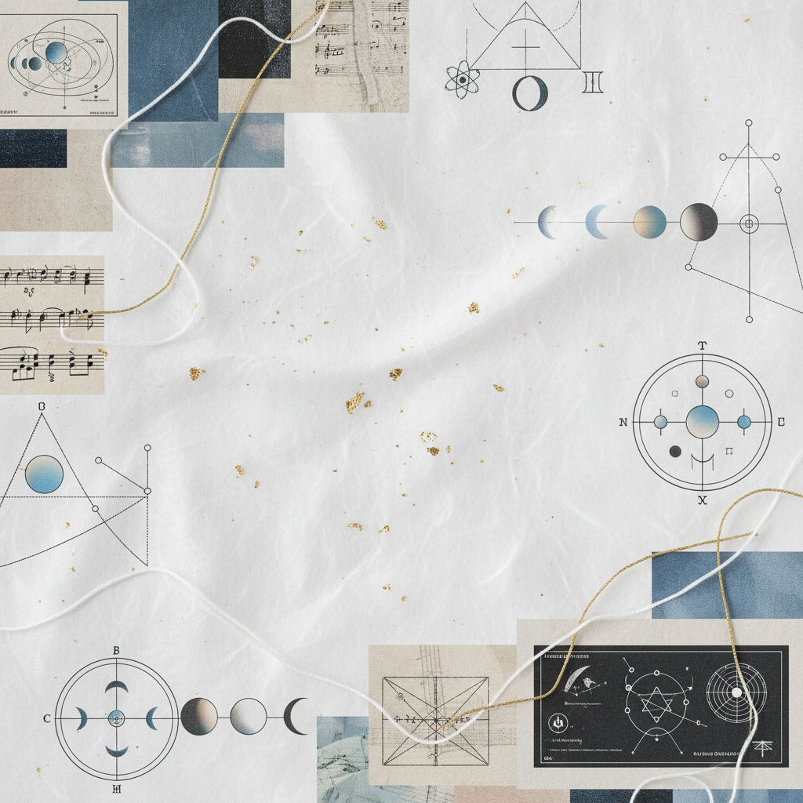
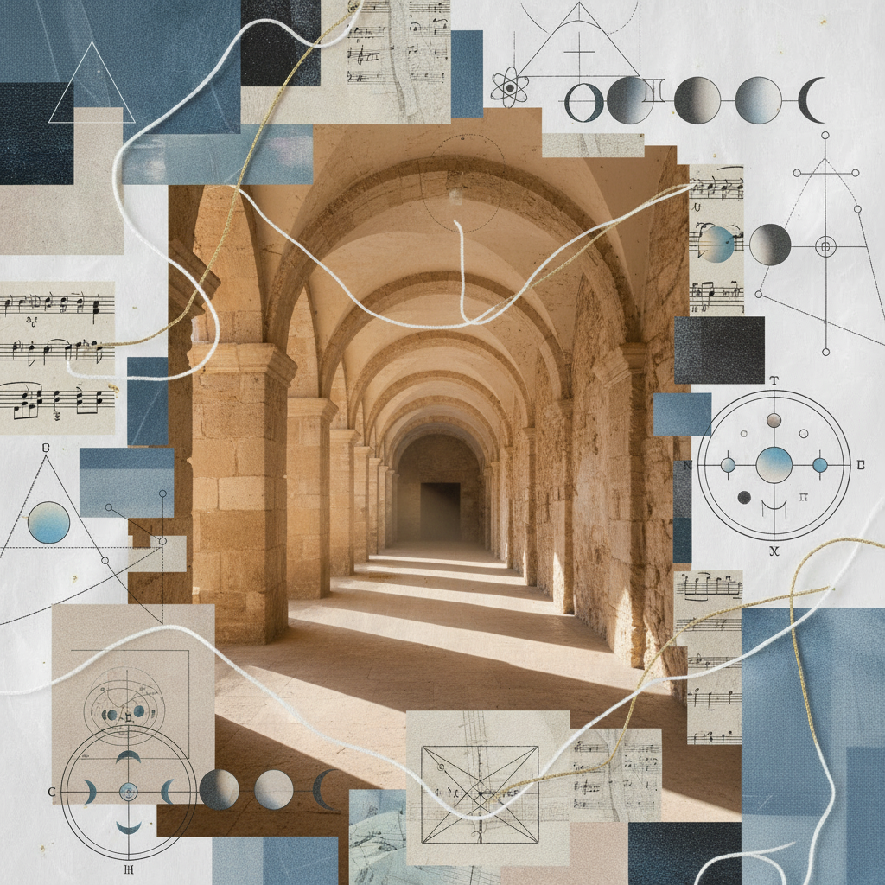

Voice to Womb:
Gemini New Moon → Cancer Full Moon
The alchemical shift from the airy exchange of the lungs to the watery embrace of the breast. From communication to nurturing; from word to sanctuary.
Path Attributes
- Element Air to Water
- Primary Organs Lungs / Breasts
- Key Frequency 432 Hz / Resonance
Somatic Protocols
Emotional Softening ClusterThe Breath of the Hearth
Sit in a space of complete stillness. As you inhale, imagine the air carrying the data of your day into your lungs. As you exhale, direct that breath downward toward the heart space, visualizing the air condensing into a warm, silver mist that hydrates the tissues of the chest.
The Softening Principle
"To nurture is to first yield. One cannot feed from a stone. We must turn the architecture of the ribs into the architecture of a nest."

"The word is the seed; the womb is the soil."
Manuscript Fragment 11.04
Architecture of Sanctuary
Research the historical link between the *Domus* and the feminine archetype. How does the physical structure of a home mirror the somatic containment of the body during the transition from Gemini (the crossroads) to Cancer (the temple)?

Marginalia
"The arch does not exist without the pressure of the stones against one another. Sanctuary is born from tension."